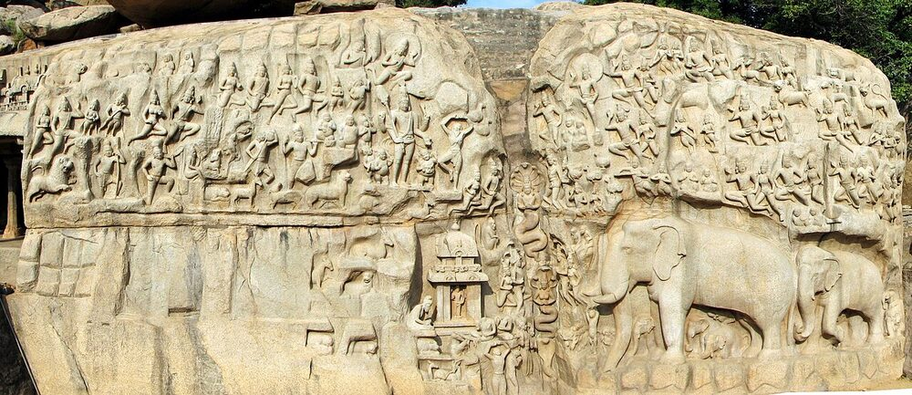
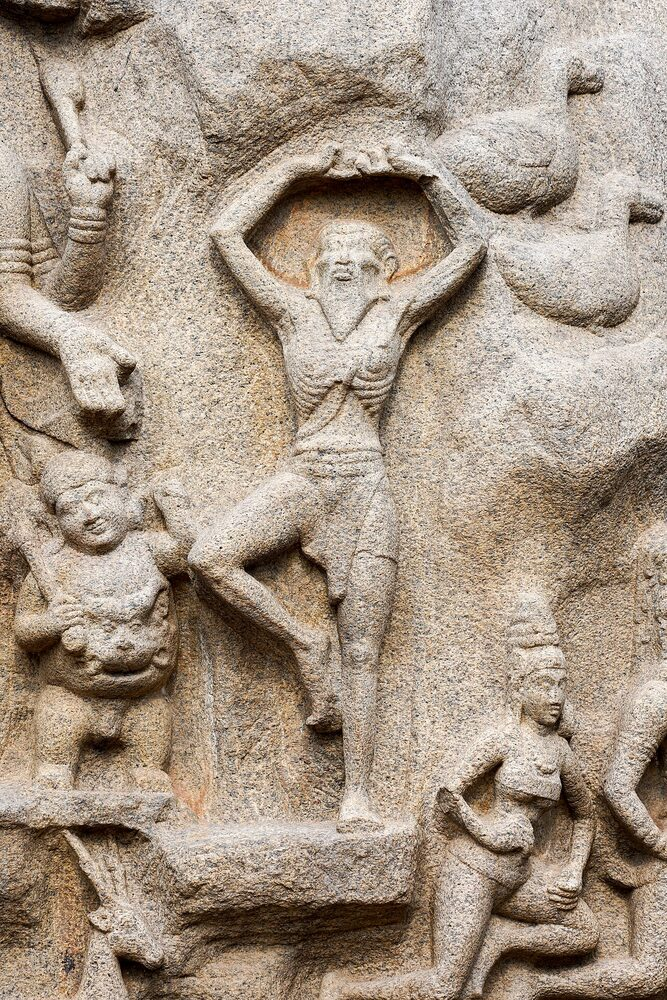
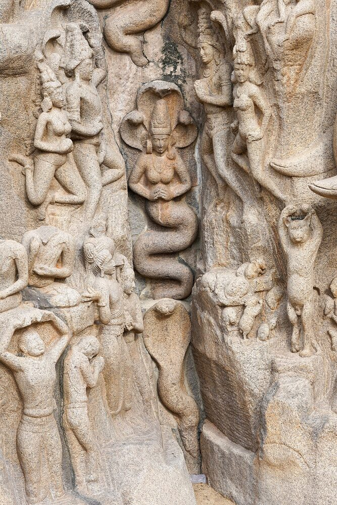
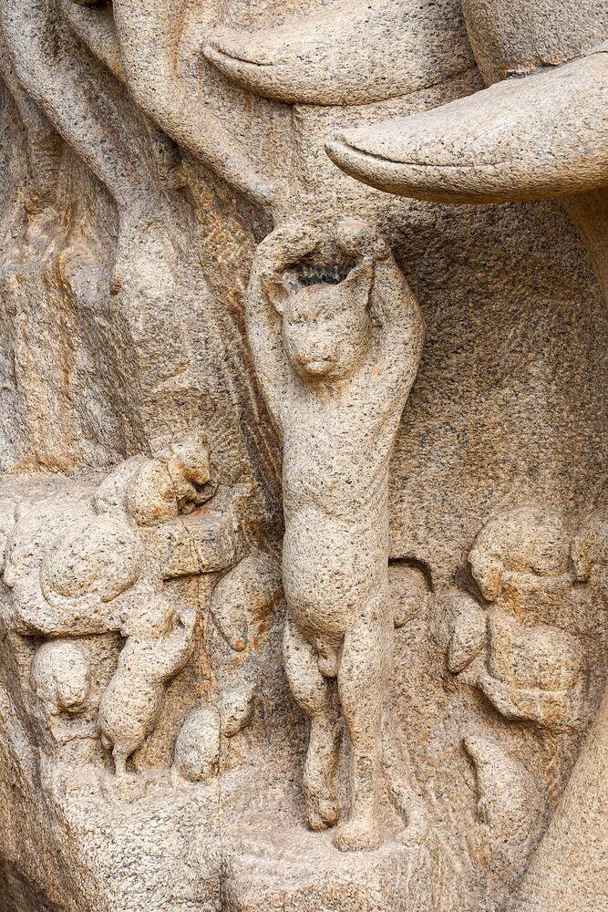
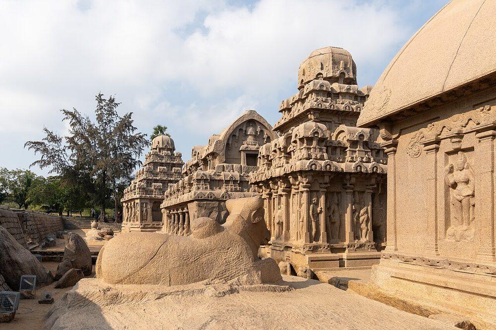
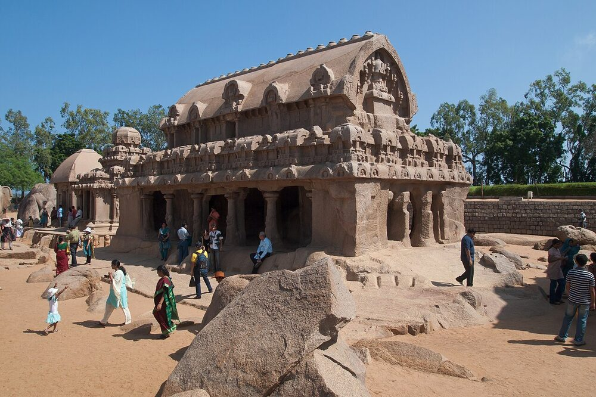
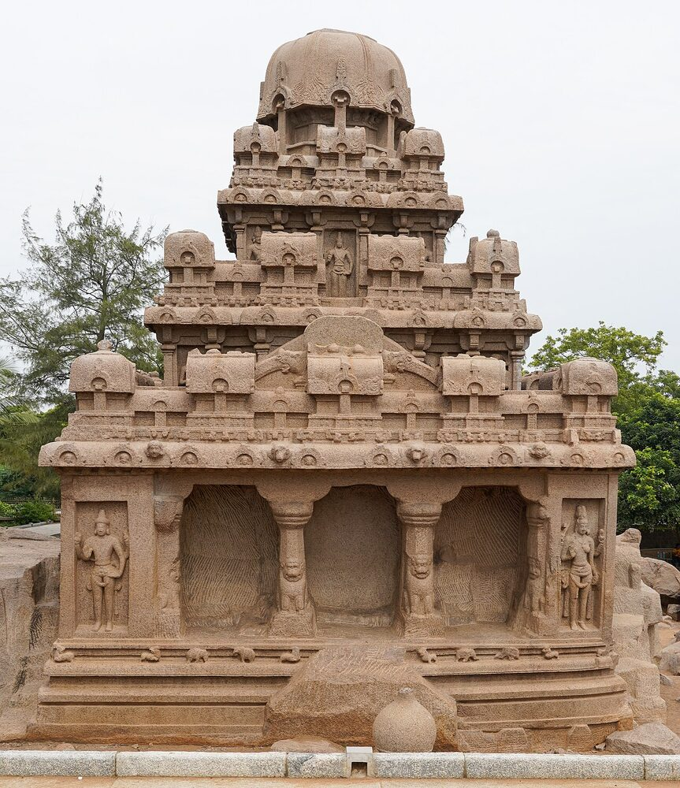
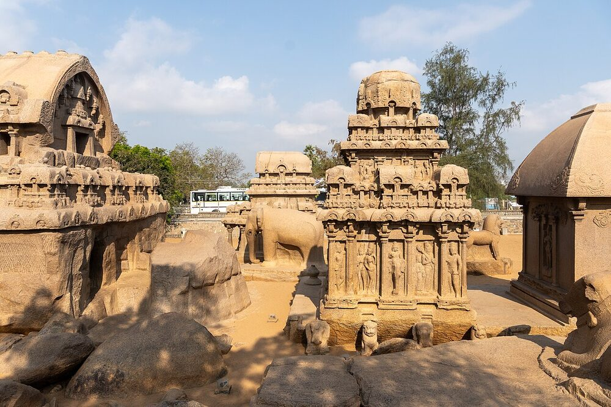

FML-2 · Sub-assignment 2 · Sculpture thematic analysis
Carving the Cosmos: Arjuna's Penance and the Pancha Rathas of Mahabalipuram
Two Pallava works from the 7th century: a cliff face turned into a crowded universe, and five boulders turned into a catalogue of temple forms. Both show a dynasty experimenting with what stone could say.
1. Introduction
Mahabalipuram (Mamallapuram), on the Coromandel coast south of Chennai, was the sea port of the Pallava kings of Kanchipuram. Most of its monuments belong to the 7th and early 8th centuries CE. The town's name is usually linked to Narasimhavarman I (r. c. 630–668), whose title was Mamalla, “great wrestler”. His father Mahendravarman I had begun cutting temples into rock; at Mahabalipuram the Pallavas went much further. The site contains every stage of early South Indian temple art: cave temples (mandapas), open-air reliefs, free-standing monoliths (rathas), and finally a structural temple built of cut blocks, the Shore Temple. In 1984 UNESCO listed the site as the Group of Monuments at Mahabalipuram.
This report analyses two of these works, Arjuna's Penance and the Pancha Rathas. They are very different. One is a single narrative relief, the other a group of buildings. That difference is useful: together they show the two great problems the Pallava sculptors were solving at once, how to tell a sacred story in stone and how to give a god a house.
2. Arjuna's Penance (the Descent of the Ganga)

2.1 Composition: everything moves toward the river
The relief covers the face of two adjoining boulders, roughly 29 m long and 13 m high (published figures vary). Its organising idea is the natural vertical cleft between the two rocks. The sculptors did not hide the crack; they made it the centre of the composition. A cistern on top of the rock could release water down the cleft, so on festival days the carved river actually flowed. Inside the cleft swim nagas, serpent beings with human upper bodies and hands joined in worship. These water spirits tell us the channel is a river.
Around the cleft, more than a hundred figures are arranged in bands. Gods, flying celestial couples, sages, hunters, and animals of every size face or move towards the centre. Fig. 2 maps these zones.
2.2 Iconography: who is on the rock
The ascetic. Above the shrine, left of the cleft, an emaciated man stands on one leg with his arms raised over his head, his ribs showing. Standing on one leg is a classic sign of tapas, extreme penance. Beside him stands Shiva with four arms, holding a weapon, surrounded by pot-bellied ganas. The god has appeared to grant the boon the penance was meant to win.
The nagas. The naga king and his queen (nagini), with serpent hoods, rise up the cleft. Nagas are guardians of water in Indian art, so their presence turns the crack into a sacred river.
The elephants. At lower right a bull elephant leads a cow and their calves, which shelter between their legs. They are carved almost life-size, the largest figures on the rock, and are observed with real tenderness.
The cat. Under the elephant's trunk, a cat stands upright on its hind legs with its forelegs raised, a perfect parody of the ascetic above. Small creatures, usually identified as mice, gather around it. This recalls fables of the Panchatantra type about a hypocritical cat that pretends to be holy in order to catch prey.
The shrine. On the riverbank stands a small temple containing Vishnu, with sages seated in front. Its curved roof resembles the Draupadi Ratha (Section 3), which links the two works.



2.3 One relief, two stories
Scholars have long argued over what the relief shows. The name “Arjuna's Penance” follows the Mahabharata episode (retold by the poet Bharavi in the Kiratarjuniya) in which the hero Arjuna performs penance to win the divine Pashupata weapon from Shiva. The alternative title, the “Descent of the Ganga”, follows the story of King Bhagiratha, whose penance persuaded Shiva to catch the heavenly river Ganga in his hair and let her down gently to earth.
The evidence fits both. The weapon in Shiva's hand suits Arjuna. The cleft as a river, the nagas and the flowing water suit Bhagiratha. In my reading the ambiguity is probably deliberate. Pallava court culture loved double meaning: Sanskrit poetry of the period, and inscriptions at Mahabalipuram itself, often play on words that can be read two ways. A relief that shows a hero earning divine power, and a ruler bringing a life-giving river to his land, at the same time suits a king who wanted to be seen as both warrior and benefactor. Some historians also connect the work to Narasimhavarman I's victory over the Chalukya king Pulakeshin II in 642 CE.
Analysis: what the relief achieves
Nature as partner. The sculptors used the rock as they found it. The crack became the river, and the rounded boulder tops became the sky. Granite is very hard to carve, so working with the stone's own shape was practical as well as poetic.
Naturalism and scale. The gods are not shown larger than the animals. The biggest figures are elephants, and a deer scratching its nose with a hind hoof shares the rock with Shiva. Sacred events here happen inside a living world, not above it.
Humour inside devotion. The cat parodies the ascetic a few metres away. It is a moral warning: penance is worthless if it is only for show. Placing satire next to a holy scene shows an art confident enough to teach through wit.
Simultaneous narration. Like the Ajanta murals, the relief has no frames. But where Ajanta tells a story as a sequence, Mahabalipuram shows one charged moment that the whole universe witnesses together.
3. The Pancha Rathas: five temples from one rock

3.1 Carved, not built
The Pancha Rathas (“five chariots”) are not built from blocks. Each is carved whole from a single granite outcrop that sloped from south to north; the tallest ratha stands where the rock was highest. The sculptors worked from the top downwards, so a mistake could not be repaired. Uncut rock is still visible at the bases and roofs. The rathas were never finished and never consecrated, and work probably stopped at the death of their patron. They are usually dated to the reign of Narasimhavarman I, but some scholars, notably R. Nagaswamy, have argued for a later Pallava date.
Their names are a later popular tradition. The five Pandava brothers of the Mahabharata and their wife Draupadi have no historical connection with them; they are simply named after them. A life-size elephant, a lion and a Nandi bull, also monoliths, stand among the rathas as the vehicles and guardians of the gods.
3.2 Five rathas, five temple types
The most interesting fact about the group is that no two rathas share a design. Each copies a different kind of building, most of which until then had existed only in timber, thatch and brick (Fig. 5).
| Ratha | Form | Sculpture / dedication | What it models |
|---|---|---|---|
| Draupadi | Small square cell with a curved, four-sided roof copying thatch | Durga: the goddess stands inside, with kneeling devotees | The humble village shrine of thatch and bamboo, in permanent stone |
| Arjuna | Square, pillared, two-tier pyramidal tower with a domed crown | Shiva; a Nandi lies behind it. Graceful paired figures on the walls | The early Dravida vimana, the tower-shrine of South Indian temples |
| Bhima | Long rectangular hall with a barrel-vaulted (“wagon”) roof, lion-based pillars | Unfinished, no image installed | The shala hall. Its vault later crowned the gateway towers (gopurams) |
| Dharmaraja | Tallest (about 12 m), square, three-tier pyramidal vimana | Shiva in many forms (Harihara, Ardhanarishvara), a royal portrait, and inscriptions of Pallava royal titles | The fully developed royal temple, scaled up later at Kanchipuram |
| Nakula–Sahadeva | Apsidal plan (one rounded end), two tiers, “elephant-back” (gajaprishtha) roof | No image; a life-size elephant stands beside it, its back echoing the roof | The apsidal hall known from Buddhist chaitya halls, adapted for Hindu use |



Analysis: a catalogue in stone
An architectural experiment. A temple usually exists for its image. Most of these rathas never received one, which suggests their purpose was the forms themselves. The group reads like a full-size pattern book, or a workshop of models: the Pallava builders were testing which wooden and thatched forms could be made permanent in stone, and how they would look.
Wood remembered in granite. The rathas copy timber details that granite does not need, such as roof beams, rafter ends, the horseshoe-shaped dormer windows (kudu) and the curve of thatch. The sculptors were translating an older building tradition into a permanent material, detail by detail.
The future in miniature. The experiment worked. The stepped tower of the Arjuna and Dharmaraja rathas became the standard South Indian vimana, built in blocks at the Shore Temple and the Kailasanatha at Kanchipuram, and later at the great Chola temples of Thanjavur. The Bhima Ratha's wagon roof became the crown of the gopuram. Few sites let us see the birth of an entire architectural style in one place.
4. Themes across both monuments
Religious inclusiveness. Shiva dominates both works, but the Penance gives Vishnu his own shrine, and the rathas house Durga, Shiva and the combined Shiva–Vishnu form Harihara. Pallava art presents the gods as one connected family, not rival sects.
The sacred inside nature. In the relief a natural crack becomes the Ganga, and the rathas were carved out of a natural rock outcrop. In both, the landscape itself is part of the sacred work rather than just a site for it.
Royal power. Inscribed royal titles on the Dharmaraja Ratha, the king's portrait carved on it, and the political reading of the Penance all show art serving kingship. The king presents himself as a patron who can command rock itself.
Experiment and transition. Mahabalipuram records the move from cutting into rock (caves), to cutting rock free (rathas), to building with cut stone (the Shore Temple). Both monuments belong to the experimental middle of that journey.
5. Conclusion: the Pallava achievement
Arjuna's Penance and the Pancha Rathas show the Pallavas solving two problems with remarkable confidence. In the relief they found a new way to tell sacred stories: one huge, radiating scene where gods, humans and animals share a single world, combining devotion, political meaning and humour. In the rathas they turned the perishable buildings of their time into permanent stone and set out the vocabulary of the South Indian temple: the stepped vimana, the vaulted hall and the apsidal shrine. That vocabulary lasted for a thousand years.
That is why these works matter to India's cultural heritage. They are not only beautiful; they are the point of origin for the Dravida style later seen at Kanchipuram, Thanjavur and Madurai. Carved in one of the hardest stones available, on a busy port that linked India to Southeast Asia, they also show the outward-looking confidence of Pallava culture. Thirteen centuries later, the elephants still walk toward the river.
References
- UNESCO World Heritage Centre. “Group of Monuments at Mahabalipuram” (inscribed 1984). whc.unesco.org/en/list/249
- Harle, J. C. The Art and Architecture of the Indian Subcontinent. 2nd ed. New Haven: Yale University Press, 1994.
- Huntington, Susan L. The Art of Ancient India: Buddhist, Hindu, Jain. New York: Weatherhill, 1985.
- Michell, George. The Hindu Temple: An Introduction to Its Meaning and Forms. Chicago: University of Chicago Press, 1988.
- Singh, Upinder. A History of Ancient and Early Medieval India. New Delhi: Pearson, 2008.
- MAP Academy. “Pancha Rathas, Mamallapuram”. mapacademy.io/article/pancha-rathas-mamallapuram
- Incredible India (Ministry of Tourism). “The Pancha Rathas”. incredibleindia.gov.in
- “This 7th-century boulder tells the tale of Arjuna's penance to Shiva”. ThePrint, book excerpt. theprint.in
Image credits (all via Wikimedia Commons): Fig. 1, Bernard Gagnon, CC BY-SA 3.0. Fig. 3 and Fig. 6 (centre), Timothy A. Gonsalves, CC BY-SA 4.0. Figs. 4 and 6 (right), Rainer Halama, CC BY-SA 4.0. Fig. 6 (left), Vyacheslav Argenberg, CC BY 4.0. Figs. 2 and 5 are the author's own diagrams.